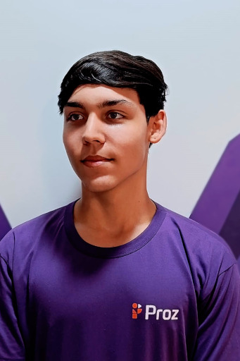

Olá! Sou Fillipe Resende Desenvolvedor Fullstack
Desenvolvedor web com conhecimentos em desenvolvimento de aplicações web escaláveis e responsivas. Busco constantemente aprimorar minhas habilidades e explorar soluções tecnológicas que gerem valor e impacto positivo para os usuários. Tenho experiência em HTML, CSS, JavaScript, C#, .NET e SQL, com projetos práticos que demonstram minha habilidade em desenvolver interfaces intuitivas e sistemas eficientes.
Saiba mais!
